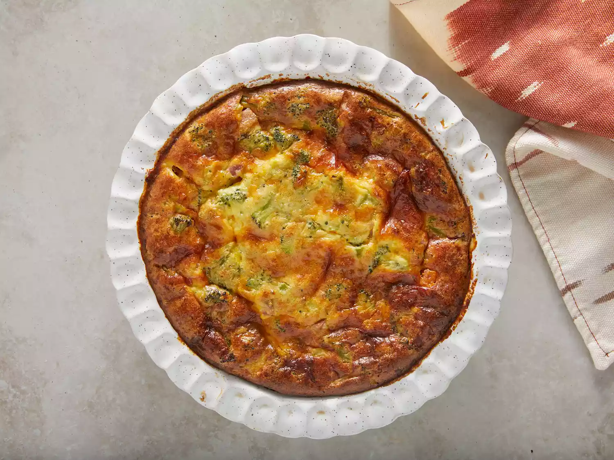

Quiche
Try this easy quiche recipe for breakfast, brunch, lunch, or dinner. Loaded with broccoli, ham, and Parmesan cheese, this quiche is totally crustless! A bit of baking mix in the batter firms up the egg mixture so it has no problems setting without a crust. Use other veggies or breakfast meats to make this your own.
Ingredients
- 2 cups of milk
- 4 large eggs
- 1 cup of grated parmesan cheese
Steps
- Preheat the oven to 375 degrees F (190 degrees C). Lightly grease a 10-inch quiche dish.
- Beat milk, eggs, Parmesan cheese, baking mix, and butter in a large bowl until well combined; batter will be lumpy. Stir in broccoli, Cheddar cheese, and ham.
- Pour into the prepared quiche dish.
